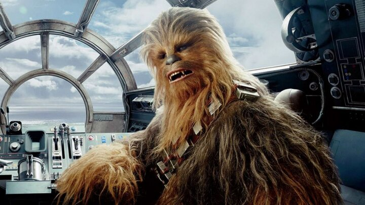

Yoda was almost played by a monkey.
According to the book The Making of Star Wars by J.W. Rinzler, George Lucas originally planned for Yoda to be played by an adorable monkey wearing a mask and carrying a cane.
"I have a bad feeling about this" became a running gag for the franchise.
The phrase "I have a bad feeling about this" or "I have a very bad feeling about this" is said in every Star Wars movie.
Depending on what movie you're watching, Yoda has a different number of toes.
In The Phantom Menace, Yoda has three toes. But in The Empire Strikes Back, Return of the Jedi and Revenge of the Sith, he has four.
Chewbacca's voice is an eclectic mix of other animals.
Chewbacca's voice is a mix of bears, walruses, lions, badgers and other dying animals.
